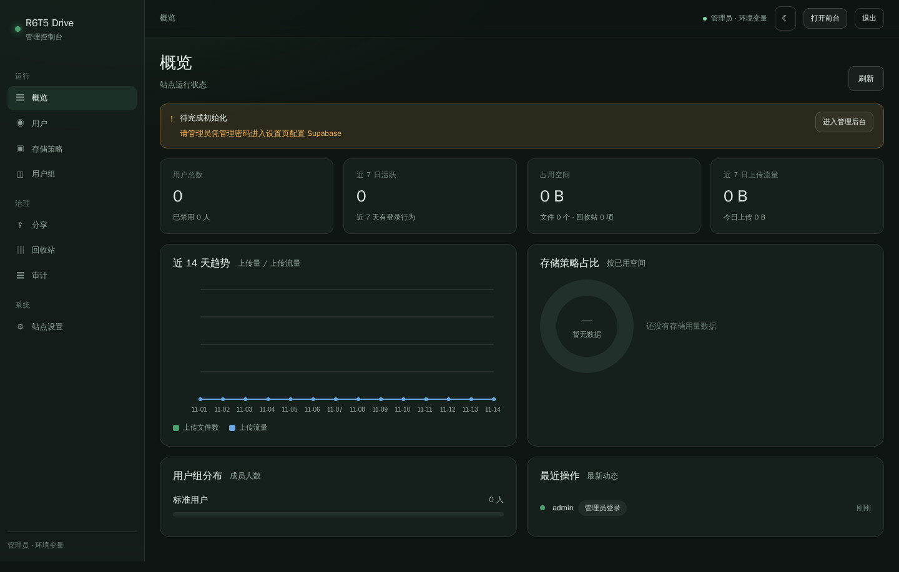

R6T5 Drive 是一个用 Docker 跑起来的多用户文件库。账号与资料走 Supabase，文件落到你的数据卷、S3 兼容存储或只读的 GitHub 仓库；每个用户的目录以邮箱明示，谁也别想看别人的东西。
# 一个容器就是一个站点 git clone https://github.com/TanchiPanda/r6t5-drive cd r6t5-drive && cp .env.example .env docker compose up -d # 首次打开，登录页是空的： 请管理员凭管理密码进入设置页配置 Supabase # 后台配完账号，再建一个存储策略 # 用户用邮箱登录，目录就是 data/<邮箱>/… # 端口 5212：http://<主机>:5212
不做花活：登录、传、看、删、找回，以及看得见的额度。
Supabase Auth 承担账号与资料，服务端换会话 cookie，密钥不出后端。
逻辑与物理路径都是 邮箱/文件夹/文件，用户之间默认互不可见。
带进度的上传、下载、重命名、移动、文件名搜索。
删除先进回收站，可恢复也可彻底清除，误删不至于慌。
空间、单文件、7 天上传流量分别拦截，三种错误码三套文案，不糊成一个「失败」。
分享（有效期 / 提取码 / 次数）与图片视频文本预览已留好契约，页面是诚实空态。
从「站点还没配好」到「谁超了流量」，都在这几页里。
用户数、7 日活跃、占用空间、上传流量，14 天趋势与策略占比一屏看完。
填 URL 与密钥、跑三步连通性自检、管用户分组与封禁；填错不会落脏配置。
添加数据卷 / S3 / GitHub 仓库三类策略，创建前必须勾选「哪些基础信息对用户可见」。
每组单独设空间、单文件上限、7 天上传流量；除管理员外建议至少两组。
登录、上传、删除、改配额都留痕，按操作者与时间可查。
站点名、对外地址、默认用户组、注册开关，必填项不填完会有提示。
同一套文件系统抽象之下，三种后端。策略创建时系统会把「哪些信息会展示给普通用户」逐条列出，同意才创建；密钥类字段永不出现在用户侧。
挂载到容器内的磁盘目录，读写皆可。适合单机、私有服务器，文件就是目录里的文件。
按 S3 协议接入对象存储；七牛、阿里 OSS、腾讯 COS、华为 OBS 等适配器位已留，逐个补。
只读接入一个仓库分支，适合把文档、素材库直接当文件源展示，不允许写入。
登录页不会一次丢给你一堆待办。系统判断当前最该做的一件事，只显示那一条，做完自动换下一条。
截图来自仓库 docs/screenshots，与代码同一版本；空态就是用户第一次见到的样子。

有 Docker 就用 compose；想在本地先摸一遍，也能直接起进程。前端是纯 HTML/CSS/JS，不依赖任何 CDN。
cp .env.example .env # 填 ADMIN_PASSWORD 与对外地址 docker compose up -d # 宿主 http://localhost:5212
npm ci node server/index.js # 默认 http://127.0.0.1:8099
docker run -d --name r6t5-drive \ -p 5212:5212 \ -e SESSION_SECRET=$(openssl rand -hex 32) \ -v "$PWD/data:/app/data" \ ghcr.io/tanchipanda/r6t5-drive:latest
ADMIN_PASSWORD 留空时首启随机生成，只往日志打印一次。之后可在后台改站点设置。
镜像由 GitHub Actions 构建并冒烟启动后发布：ghcr.io/tanchipanda/r6t5-drive，标签 latest 与 sha-<提交>。容器内端口与应用默认端口都是 5212。
# PowerShell（CMD 里 $(...) 不展开，会去拉一个叫 rand 的镜像） New-Item -ItemType Directory -Force -Path .\data | Out-Null docker run -d --name r6t5-drive -p 5212:5212 ` -v "${PWD}\data:/app/data" ` -e "TZ=Asia/Shanghai" ` ghcr.io/tanchipanda/r6t5-drive:latest
会话密钥可以不传，程序会自动生成并落盘到 data/；首次管理员密码看 docker logs r6t5-drive。
应用只有一个 Node 进程，元数据是 SQLite，文件走数据卷或对象存储。下面这套是按「能跑稳、出问题好查」给的，不是压测极限值。
| 规模 | CPU / 内存 | 磁盘 |
|---|---|---|
| 起步 / 自用 | 1 vCPU · 512 MB | 系统盘之外，按用户组总配额 × 1.2 预留 |
| 10 人以内 | 2 vCPU · 1 GB | 同上；数据卷放本地 SSD，别放网络盘 |
| 30–50 人 | 4 vCPU · 2 GB | 对象存储接管大文件，本地只留 SQLite |
/app/data：SQLite 与用户文件都在里面，不挂等于每次重启清零restart: unless-stopped，开机自动回来SESSION_SECRET，或至少别删 dataclient_max_body_size 0 + proxy_request_buffering off）data：SQLite 单写，第二个进程会锁库data 放 NFS / 网盘：上传流式写入对延迟敏感DEV_AUTH 开在生产：那是本地联调绕过 Supabase 的开关data/：SQLite 库 + 全部用户文件docker stop r6t5-drive，避免拷到写了一半的库docker pull 新镜像后 up -d，数据在卷里不受影响sha-<提交> 标签，比 latest 可控services:
drive:
image: ghcr.io/tanchipanda/r6t5-drive:latest
container_name: r6t5-drive
restart: unless-stopped
ports: ["5212:5212"]
env_file: [.env]
environment:
TZ: Asia/Shanghai
SESSION_SECRET: ${SESSION_SECRET}
TRASH_RETENTION_DAYS: "30"
volumes: ["./data:/app/data"]
deploy:
resources:
limits: { cpus: "2.0", memory: 1G }
healthcheck:
test: ["CMD","node","-e","fetch('http://127.0.0.1:5212/api/setup/status').then(r=>process.exit(r.ok?0:1))"]
interval: 30s
timeout: 5s
retries: 3
内存上限给 1G 是留了 Node 的余量；单文件几百 MB 的上传会短暂占用内存，长期跑大文件建议切 S3 策略。
没有代码关系。功能构成上参考了同类自托管网盘的常见做法，实现全部自研：技术栈是 Node + SQLite + 原生前端，Cloudreve 是 Go + React。仓库里不含对方的代码、界面或文案。
登录与用户资料存在你自己配置的 Supabase 项目里，文件与文件元数据留在本地 SQLite 和你的存储后端。密钥只保存在服务端配置里，不下发浏览器。
这是刻意的：data/volume/<邮箱>/… 让隔离关系一眼可验证，运维时不用猜哪个目录属于谁。界面上同样明示这一层，不做隐藏。
单机存储 + 多用户 + 配额这条主线可用，接口自检 28 项全过。S3、分享、预览等按契约返回未实现，页面是空态而不是假数据，适合内部试用与二次开发。